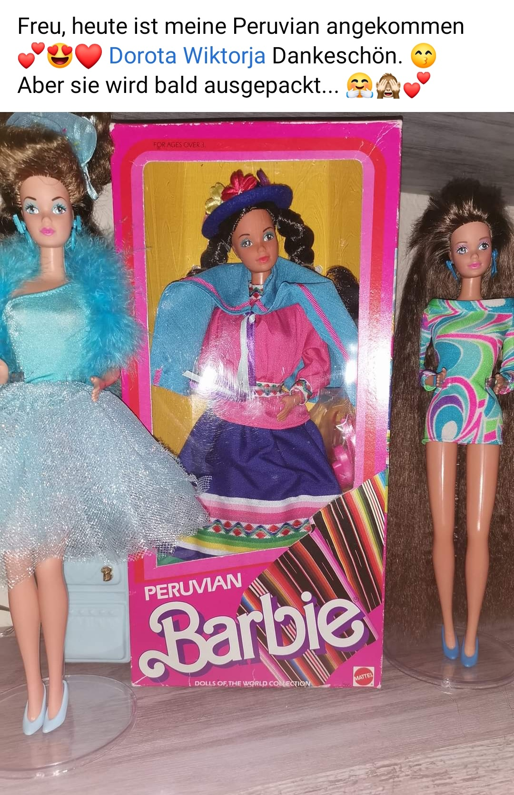
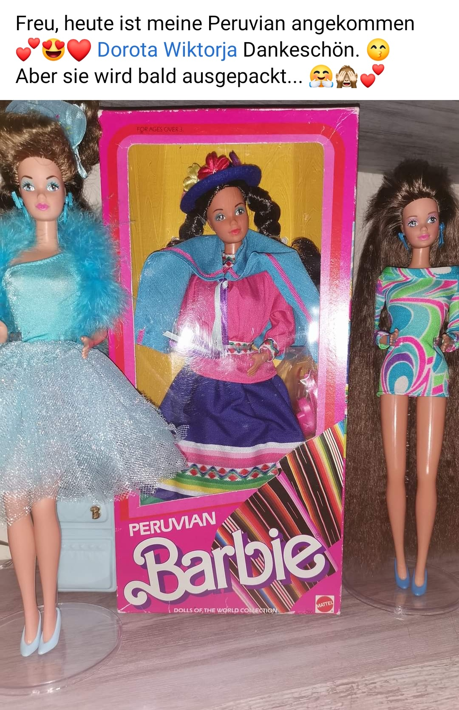

Mein Name ist Doda und ich bin eine passionierte Barbie-Sammlerin
(bevorzugt Steffie-Face). Auf DodaDolls findet ihr Fotos aus meiner
Sammlung, Puppenunikate, seltene Barbies und Accessoires, Diorama-
sowie Fashion-Inspirationen. In meinem DollFinder (Puppen-Suche)
möchte ich Euch helfen, Eure Wunschpuppe zu finden und nach Hause zu
holen. Als Kind hatte ich einige wenige Barbies, da sich meine Eltern
nicht wirklich welche leisten konnten. Meine Lieblinge waren Geschenke
von Bekannten meiner Eltern aus den 70ern, die bereits von deren
Kindern bespielt worden waren. Ich verliebte mich als 8-Jährige in
eine Jewel Secrets Whitney / Prinzessin Laura und schwor mir insgeheim
diese Puppe zu kaufen sobald ich erwachsen bin. Mehr als 20 Jahre
später bestaune ich meine kleine aber feine Steffie-Face Sammlung an
verpackten und unverpackten Barbies. Auch einige Fashionistas haben es
mir angetan. Mit viel Freude fotografiere ich meine Mädels und baue
Räumlichkeiten für ihre Puppenevents. Auf Youtube findet ihr meine
Deboxing Videos der mir liebsten Puppen, Kleider, Möbelsets und
Accessoires. Ich lade Euch ein auf eine farbenfrohe Reise in die
virtuelle Welt der DodaDolls!
Who's DodaDolls?
My name is Doda and I am a passionate and avid Barbie collector
(preferably Steffie mold). You can find pictures of my collection, one
of a kind doll creations, rare Barbies and accessories, as well as
diorama inspirations on my page. My DollFinder shall assist your
search for your perfect doll. I want to help you bring your dream doll
home! When I was young I only had a few Barbies since my parents could
not afford them. Some of my favourites included vintage dolls from the
70ies that my parents' friends had given us as a gift (and which had
been played with by their own children). When I was around 8 years old
I fell in love with Jewel Secrets Whitney and made a silent promise to
myself: "When I grow up, I shall get all the Barbies I always dreamed
of." Over 20 years later I can look at a small but solid collection of
boxed and unboxed Steffie mold dolls, Barbies and Fashionistas. It
gives me enormous joy to photograph and pose my hybrid dolls or create
rooms for their doll events. You can find my deboxing videos on
Youtube, which mostly show my favourite Barbie dolls, fashions,
playsets and accessoires. Let me invite you on a colourful trip into
the amazing world of DodaDolls!
🇬🇧
Hello dear Barbie fan and visitor, here are some facts about me
Barbie dolls have always fascinated me. My first memories of them came from advertising magazines of the Superstar era which showed off Barbie, Skipper and Ken in their amazing flamboyant 80ies fashions.
I remember standing in front of a huge shelf at a big convenience store. The Steffie faced Jewel Secrets Princess Laura (the European version of Jewel Secrets Whitney) had just arrived. She was presented right next to the Perfume Pretty Whitney.
Both of them were my biggest wish, but my parents did not have enough money to buy them. I kept staring at the beauty of the Steffie face and those gorgeous blue fashions and dreamt about one day growing up and being able to afford such beauties. But would I then be still able to play with and enjoy them?
Fast forward over 20 years later: over the course of decades,
step by step, I was able to "amass" quite a small collection of Steffie faced dolls. I also enjoy the new fashionista lines
(especially AA dolls, their skin tones are amazing) and some superstar era Barbies.
Still, the only one missing is the Jewel Secrets Princess Laura - irony?
I enjoy watching (even seemingly unprofessional) doll videos online. Whenever I find the time I video blog in an amateur and super improvised manner about my own thrift hauls, marketplace or ebay doll purchases and newly acquired gems on my YouTube channel.
STOP BY AND LETS CHAT!
Currently I am building up my dollstore on instagram (even though I have been selling on ebay for years, find me under my name there).
I liquidate parts of my old collection or offer up dolls from friends or trusted dealers who changed their tastes or want to switch up their collections as well.
I ship worldwide, although the sad and dramatic global pandemic has made it hard for me to effectively reach some countries by post without risking a huge delay.
I love getting positive feedback and seeing the happiness dolls can bring. Most of my customers send me pictures of their buys from the DodaDollStore, but these especially stood out in 2020/2021, so I want to share them with you ❤


 
